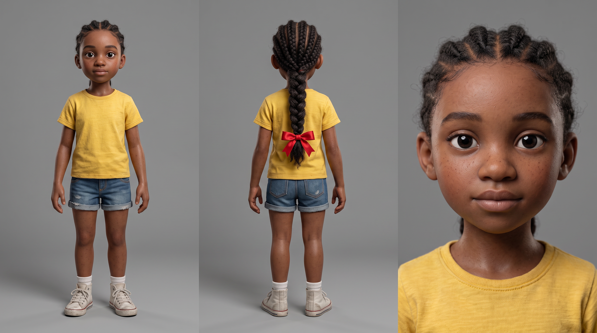
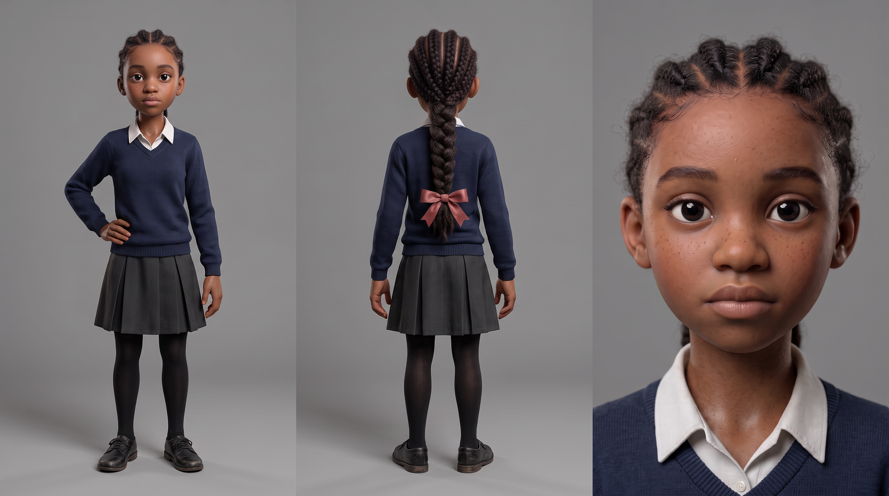
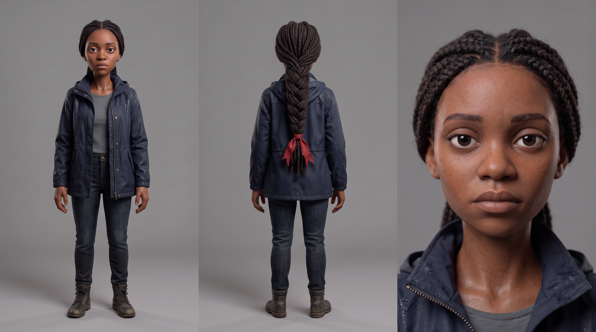
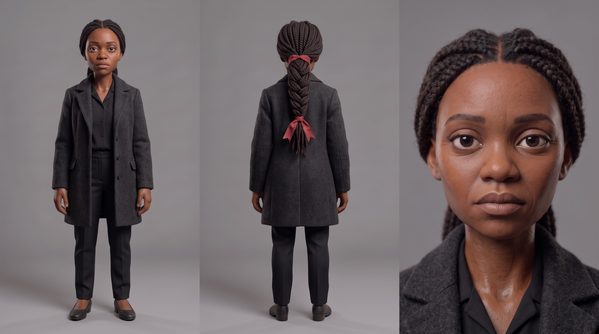
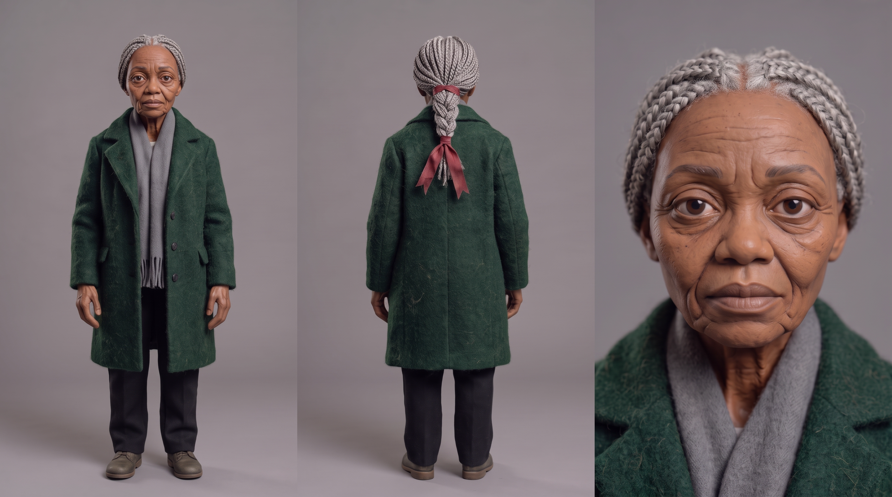
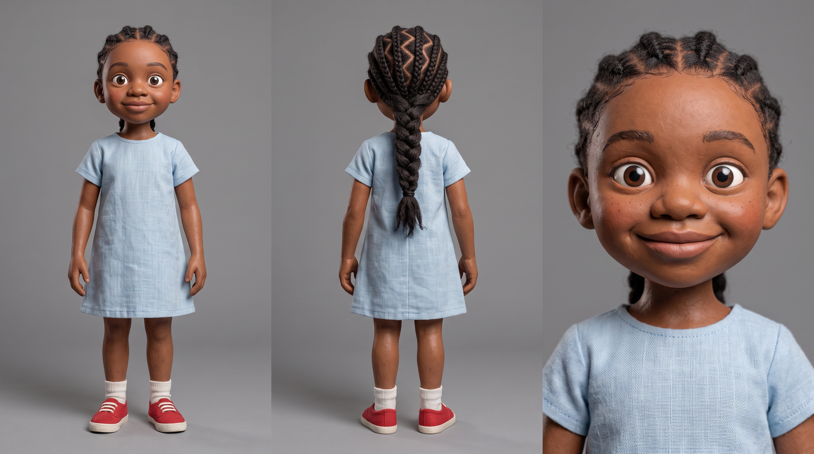
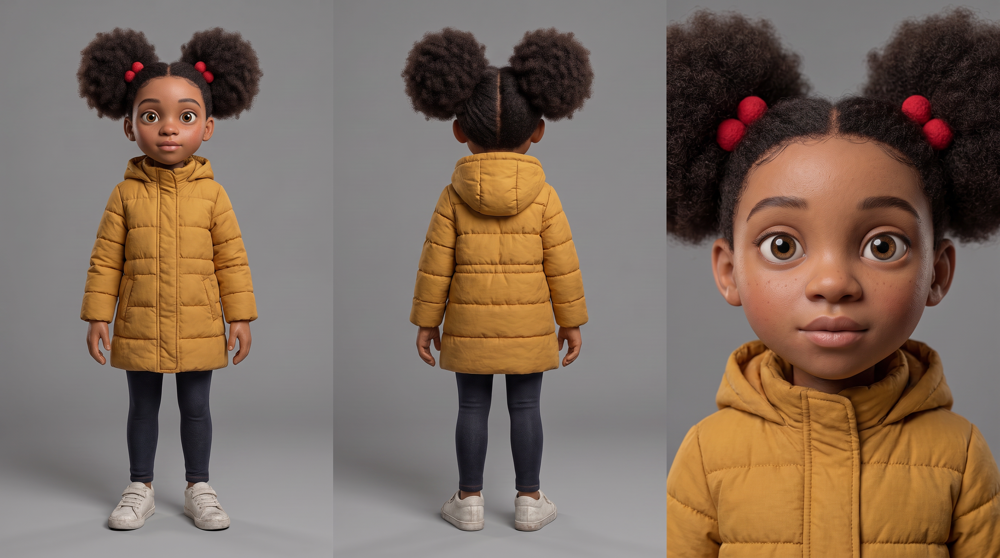

HOP
Three days, a platform I’d never used, and one stretch of pavement across sixty years.
Updated September 2026
I entered the Higgsfield Global Film Festival at the last minute. That meant learning an entirely new generation platform and building a wordless 3-minute film from a standing start. The starting question was whether a wordless film could carry real emotional weight using only a single location, one character across five ages, and a piece of chalk.
HOP follows one woman across her life, seen only from a single stretch of suburban pavement. It’s about wanting to be somewhere other than where you are. As a child you want to be older, because older means freedom. Then you’re older, and the freedom you actually had was the afternoon you spent drawing on the pavement without knowing it was worth anything. It’s her own daughter who shows her, without meaning to. What she finds is that the joy wasn’t only in being seven. It’s available at any age, if she stops wishing herself somewhere else long enough to notice it.
There is no dialogue at any point. Every voice heard is muffled, distant, and never intelligible.
HOP. Entered into the Higgsfield Global Film Festival 2025.
One character, five ages
Every version of the same woman had to be built as a separate locked reference before a single shot was generated. The puppet proportions, the red ribbon, the braid. All of it had to hold across sixty years of story time.

Age 7

Age 15

Age 25

Age 35

Age 70

The Daughter

The New Girl
One location, revisited across sixty years
The first draft had five separate environments. A kitchen, a rainy street, a flat full of boxes, a summer pavement. Four location builds I didn’t have time for. Restaging the entire film on one stretch of pavement wasn’t just faster. It made the film better. Light, weather, season and the state of the chalk carry sixty years of story, and the audience watches one piece of ground hold a whole life.
Why I chose one location instead of five
The palette runs roughly 60% pale grey concrete, 30% weathered red brick, 10% saturated chalk yellow. Colour tracks time. The chalk is fresh and bright at the start, washed and faded by the middle, gone by the end, then drawn again. Light and weather carry the years, from bright Saturday midday through dusk and rain to thin winter sun.
The style is a stylised 3D register designed to look like a handmade miniature set photographed with a real camera. Tactile materials, slightly imperfect surfaces, shallow depth of field. Deliberately not smooth CG and not photoreal. The tactile imperfection hides the artifacts that give AI video away.
Three examples of the prompt blocks that solved the hardest problems in production
The proportion lock — took six attempts to get right
Stylised puppet proportions in the same sculpted style as @girl-7, with the head oversized relative to the body, but clearly aged to adolescence: the head proportionally smaller, roughly one sixth of total standing height, the body taller with longer limbs. The face has visibly lengthened and narrowed since childhood, the rounded fullness gone from the cheeks, the jawline more defined. Never a photorealistic human: skin reads as a sculpted painted surface with fine material texture.
The scale block — added after the first old woman came out doll-sized
The woman stands at full adult human height, roughly 1.65 metres. The low brick garden wall reaches to just below her waist, with her head and shoulders rising well above the top of the wall. She is correctly scaled as a full-sized adult within this street, never a small figurine in an oversized environment.
A mid-air age transition
A child’s white canvas trainer pushes off on one foot from a chalk square. In the air the leg lengthens and the light drops away, and the foot that comes down is a scuffed black school shoe on a longer leg in black tights, the pavement now in cool dusk light. The transformation happens entirely while the foot is off the ground, in one continuous move with no cut.
Seven things I would tell myself at the start
01
Reference beats text, every time
When the prompt said "aged to twenty-five" and the reference was a seven-year-old, I got a fourteen-year-old. The reference wins. The fix was chaining one step at a time: seven anchors fifteen, fifteen anchors twenty-five. Small age gaps mean the text has less to fight.
02
Scale has to be stated, and stated early
My first old woman came out the height of a garden wall. Nothing in the prompt gave her a height, so the model guessed. The fix was a scale block near the top of every prompt comparing the character against a fixed object in the frame. Measurements don’t work. "The wall reaches just below her waist" does.
03
Position in the prompt matters as much as wording
The same scale information buried at the bottom was ignored. Moved up after the location block, it worked.
04
Never generate text
Every attempt at chalk numerals in the hopscotch grid came back garbled or with the wrong count. I generated the grid with no numbers at all and added the title in Photoshop.
05
Seedance 2.5 always generates audio and you can’t turn it off
Music kept appearing in every clip no matter how many ways I forbade it. Seedance 2.0 has a silent-video toggle. 2.5 doesn’t. I muted every generated track and rebuilt the entire soundtrack from scratch. Better anyway, since twelve separately generated room tones would never have matched at the cuts.
06
Fewer, longer generations beat many short clips
I generated whole beats as single multi-segment prompts with timed hard cuts inside them rather than thirty separate shots. Continuity holds inside a generation in a way it never does across them.
07
No dialogue removed an entire category of problems
A wordless film with a child lead means no lip-sync, ever. Every voice in the film is muffled behind glass or too far away to make out.
What I used and what each one did
Higgsfield Cinema Studio
All video and image generation, inside one festival project as the rules require. The single platform constraint for the competition.
Seedance 2.5
Every video shot. Timed multi-segment prompts, element references for each character age, locked-off cameras throughout. The engine the whole film ran on.
Nano Banana Pro
Every character sheet, location plate and prop sheet. Used to build the locked references that Seedance drew from for every generation.
ElevenLabs
Every sound in the film. Three ambience beds, spot effects, and the piano score. The entire audio was rebuilt from scratch after Seedance 2.5’s generated audio was muted.
DaVinci Resolve
Edit, grade, sound assembly and title compositing. Where the film became a film rather than a sequence of shots.
Photoshop
The chalk title lettering. Added in post after every attempt to generate readable text in-model came back garbled.